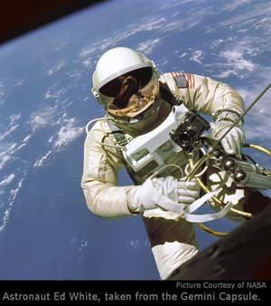
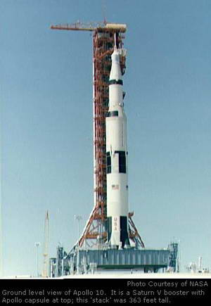
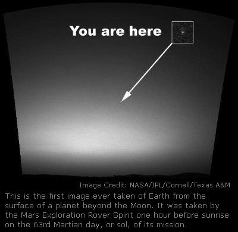

Space Colonization
Space Colonization
Near Earth Exploration
by Ricky Stilson
 
Star Trek and Star Wars have created a popular mindset that the only real space exploration is exploring other star systems. However, NASAs new Vision for Space Exploration is putting the emphasis back where it belongs.
Okay, Im going to date myself. I am so old that I remember the Apollo program. Back then people followed the Space Race kind of like people follow television shows such as Survivor or The Sopranos nowadays; it was a years-long unfolding drama about pushing the limits of technology and human endurance. When the Space Race began, nobody knew if a human could survive in space for any length of time. Now, NASA doesnt really start to worry until the relief crew for the International Space Station is more than a couple of months late.
Hopefully, with over 15 years having passed since the Berlin Wall came down, all the Cold War rhetoric can be removed from the equation. The Space Race might then be considered as a basic competition, without being overshadowed by military designs on achieving the ultimate higher ground on the Moon. While the military mindset opened American and Russian pocketbooks, it also limited the scope of planning for the exploration of space. In the West, once we reached the Moon, the race was over. In the East, technical difficulties were not overcome, as they had been in the past, after the Americans had landed on the Moon. The world was changing.
At the height of the Space Race, it was an amazing spectacle for those old enough at the time to remember it. Myself, I am only old enough to remember the final triumphs of the Apollo program, and just barely.
Dad went on to serve in World War Two, the first technological war. Everything was different after WW2, the old ways of life were changing if they survived at all. Seeing all this change gave my father a sense of wonder, I think, certainly some context for the technological advances which emerged during his life. The attempt to land a man on the moon was the crowning achievement for the World War Two generation, the ultimate technological advance.
Due to the war on terrorism, young people in America are beginning to get a sense of what it was like during the Cold War, when any day could bring news of a horrible war that nobody could win. I think that, at the time, everyone subconsciously wished that international competition could be decided on fields other than battlefields. The Olympic games were more popular then, and would continue to be a surrogate form of warfare right up to the 1980s. Remember the Lake Placid Miracle on Ice victory of the US Olympic hockey team?
The Space Race relieved those tensions as well. The reason that the Moon landings still resonate in America decades later is probably because the race started off poorly for the United States. The Soviets got off to a strong start on April 12, 1961 when they launched the first human into space. His name was Yuri Gagarin, and coming close on the heels of Sputnik, Gagarins single orbit of the Earth solidified the Soviet lead in the Space Race. That really bothered Americans, who spend their spare time racing cars, motorcycles, horses; anything that can move a human faster than their feet is adapted for competition. The race was on!
On May 5, 1961 American astronaut Alan Shepard blasted off in a
Mercury
capsule. Shepard was the first American in space, second human. It appeared that America could not even keep up with the Soviets, let alone compete in a race with them, since Shepards mission consisted of a 15 minute flight into space, no orbit. On February 20, 1962, John Glenn became the first American to orbit the Earth. Meanwhile the Soviets orbited the first woman, Valentina Tereshkova, in 1963, and debuted the three-passenger Voskhod space vehicle in 1964.
In the United States, NASAs
Gemini
program of 10 launches in two years began in 1965. The Gemini was a two person capsule, and it's my personal choice for coolest-looking design of a real spacecraft and launch vehicle.
 Gemini still could not carry as many crew as the Soviet Voskhod, and the USSR increased its lead when on March 18, 1965 cosmonaut Alexei Leonov became the first person to leave a space vehicle for a space walk. Three months later Edward White repeated the feat for the United States, on June 3, 1965. The race was close, but the Soviets still had a lead over the Americans.
Gemini still could not carry as many crew as the Soviet Voskhod, and the USSR increased its lead when on March 18, 1965 cosmonaut Alexei Leonov became the first person to leave a space vehicle for a space walk. Three months later Edward White repeated the feat for the United States, on June 3, 1965. The race was close, but the Soviets still had a lead over the Americans.
The Soviets began using the venerable
Soyuz
series of capsules in 1967. They were in the lead, coming down the home stretch, going for the Moon. The year 1967 started horribly for the Americans. On January 27, 1967, NASA suffered the tragic loss of three astronauts: Virgil Gus Grissom, Edward White, and Roger Chaffee. The three men died in a flash fire inside their capsule, while training for NASAs next project, named Apollo. It appeared that the prize of reaching the Moon first belonged to the Soviet Union.
The Saturn series of boosters was going to be the deciding factor in the Space Race. The Saturn was powerful enough to lift the payload of crew, supplies, and lander for a Moon mission. The Soviet Union ran into technical issues with their booster system design, and there was a controversy within the Soviet space program over the choice of engines and fuel. The USSR was unable to design a booster quickly enough. The effort was not in vain, since Russia currently operates the most powerful space lifting system in the world, the Proton, which was originally planned to launch cosmonauts to the moon. No Saturn has been assembled in America since the 1970s, even though the Moon prize went to the United States.
The Saturn series of rockets and the
Apollo
program started flying in October, 1968. On July 20, 1969, Neil Armstrong and Buzz Aldrin were the first humans to set foot on the Moon.
Anything was possible. Mars was next, and everybody knew that we would have a base on the Moon by the 1980s. Television chipped in on the subject with Space 1999, when the Moon could be thrown from Earth orbit and the base there would have enough with them to survive on their own. Dont forget Arthur C. Clarks 2001, a Space Odyssey, and Stanley Kubricks movie of the same name. It all made Star Treks space aliens and laser beams seem silly by comparison.
Looking back now, in 2005, I have to ask: What happened? Wheres the Moonbase? Wheres the human exploration of Jupiter? It all seemed possible back then, even probable. In fact, momentum carried both the Soviet and American space programs into the 1980s. The Soviet Unions human space flight program concentrated on endurance and began a series of manned space stations, making many wonderful breakthroughs and setting records for time spent in space by their cosmonauts. To me, they really won the Space Race, because they never really changed the direction of their space program.
During the 70s, America was beginning to show signs of glamour and glitz in its space program. Science fiction had popularized the notion of reusable spacecraft, able to come and go in a planets gravity at will. Making that a reality was going to be harder to achieve than it looks in Hollywood. Thus the
Space Shuttle.
The first one was named Enterprise after an outcry from Star Trek fans that the first space shuttle be named after the fictional starship. I felt then and still feel that a better tribute would have been to name the first shuttle to actually orbit the Earth Enterprise.

You see, if the fans had actually took the time to learn about the situation before reacting, they would have known that the first shuttle was just a test model. The first to reach space would be another orbiter, named Columbia. Instant gratification reigned.
The American public was loosing interest in the space program anyways, in the cynical wake of Watergate. I still skipped school to watch the test glides of the Enterprise, and the first launch of Columbia on April 12, 1981, but there was no drama to it really. Science fiction nuts like myself were awed at the reusable space shuttle, and the beautiful pictures of it landing in the desert. It was really cool, but I dont think we quite realized that Americas return to the Moon and a visit to Mars had been mortgaged to produce the technological wonder of the space shuttle.
Now, the reusable spacecraft concept is firmly ingrained in the NASA culture, and maybe were about to find out if it will work in a larger context. The
Lockheed-Martin
proposal submitted in May of 2005 for the next Crew Exploration Vehicle (CEV) looks like the concept which should have been accepted in the 1970s. It has no lifting engines of its own, no cargo bay; it does have maneuvering thrusters for use in orbit. It is a lifting body design, so it will reenter Earths atmosphere like the space shuttle does, but assisted by parachutes. Its a reusable space capsule, a space tractor hauling cargo like a tractor-trailer on the highway.
Lockheed is not the only horse in this race. Northrop-Grumman and Boeing have teamed up to produce their own CEV design for NASA. From the looks of it, the Grumman design will not be a lifting body, and would be a return to the classic space capsule. With Americas recent throwback craze evidenced by retro-cars, retro-TV, retro-movies, and even retro-uniforms in American football, perhaps NASA is ready to go retro and adopt such a design. Not much has been released by the Grumman team yet, so its hard to tell how their design compares to Lockheeds. Im excited to see what they put on the table.
NASA has many uses for its new spacecraft, whichever design they approve. It has to be able to deliver crew to the ISS, function as the command vehicle during a series of return missions to the Moon, and then be used in the same capacity for a flight to Mars.

The first flight of the new CEV is scheduled for 2008, with operational status by 2014, though that date is currently under consideration for advancement to 2012 or earlier. The mission to Mars is anticipated between 2015 and 2020.
This is the first time in more than 30 years that a new manned spacecraft is being designed by NASA, and this time the goal is Mars, not just the Moon. Now were talking! Wouldnt it be wonderful if the world could unite behind the goal of reaching Mars, with the European Space Agency, Russia, India, Japan and the Chinese all contributing technology and hardware; and the crew must have a representative from each continent as well! That kind of cooperation might be a pipedream, but some collaboration is almost inevitable, even if NASA remains the lead agency for a mission to Mars.
The obvious question is, with all the problems in the world, can we afford a trip to Mars? Some people in Americas government think so, as evidenced by NASAs
Vision for Space Exploration,
but others are more skeptical. The space program is more than just a thrill ride or projection of stereotypical male drives for pride or dominance. A countrys space program is an advanced research project more than anything else, and leads to
breakthroughs
in everything from consumer electronics to medicine and safety.
Since more than half of all Americans living today were born after the Moon landings, it may be useful to recount some of the common things of everyday life which came from the space program. Smoke detector technology was developed for NASAs Skylab space station, and there are now laws mandating they be installed in every home. This alone has saved countless lives. Do you have a comfortable bed? Might be a result of foam technology designed to counter the force of gravity during a space launch. The material from the Viking Mars landers parachute shroud was adapted for use in tires, increasing their life by 10,000 miles. Do you have a water filter in your home? That technology was developed for the Apollo program. Cordless power tools are a result of a need for such a device in space, and even golf balls have been improved by NASAs aerodynamic research.
In the field of medicine, technology developed for the Hubble space telescope has resulted in non-surgical breast biopsies for the diagnosis of breast cancer, and research is ongoing to adapt NASA technology used to study Earths atmosphere for faster and easier mammograms. Technology from the Mars Pathfinder mission is currently being developed to create 3-D ultrasounds.
Artificial heart devices and pacemaker implants have also benefited from NASAs technology. This is not a complete list of technology developed from space research, but it should be evident that much of our modern world is a result of NASAs space program.
What breakthroughs await us as we develop the technology to travel to Mars? And what about colonization? NASA has recently undertook a project to develop
plants
which can live in the current conditions on Mars, now that we know that there is ice and maybe even liquid water on Mars. One day Mars may become the Green Planet, not the Red Planet, in our night sky. Exploring Mars is a bold venture, with unimaginable outcomes. Will the attempt to have a permanent presence on the Moon and Mars lead to genetically altered plants and animals for space farms? Might this lead to some kind of super-crop, able to thrive in the harsh conditions of Africa, and maybe even put an end to famine there? Will humans also be altered in some way to better cope with low gravity conditions and different atmospheric gasses and pressures?
Humans are taking the reigns of their evolutionary path and embarking on this journey to their future. We are the first creatures on Earth to evolve the capability of forcing changes to our physiology to adapt to the environment, rather than the environment forcing change upon us. If we are committed to permanent settlements on the Moon and Mars, science will almost certainly step in to force the adaptations necessary for our new environment. This might result in future Earthbound thrill-seekers having themselves modified to breathe normally on mountaintops. Scandals in professional sports might be the result of genetic tampering in the future. Maybe new sports will evolve for genetically engineered competitors.
More than 400 people have been in space since Yuri Gagarin left Earth in 1961. Currently, there is serious talk of orbiting solar power stations transmitting microwave energy down to Earth. An American company is planning to put into orbit the first commercial space station, for space tourism. Astronaut
Michael Foale
recently said that in 10 to 15 years there will be both professional opportunities in space, and tourism. We may be witnessing the dawn of a golden age of space flight and human exploration; and about time too, if you ask me.
^ Top ^